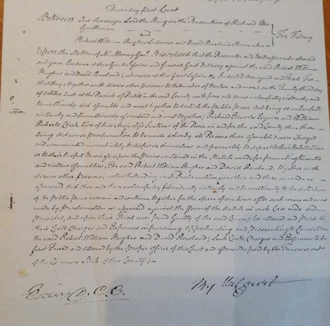
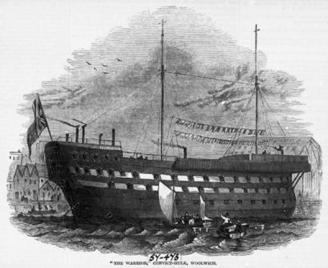
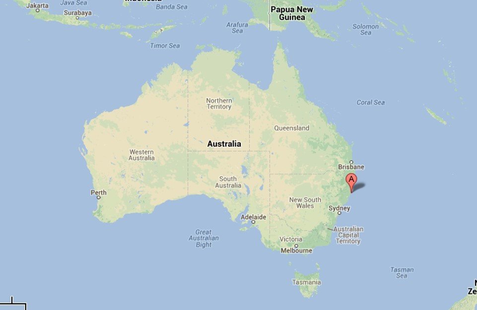

Cae’r Mynydd

Estate and law officers and surveyors came to Llithfaen, as they did throughout England and Wales, and several other areas to survey the common land in the wake of the series of Inclosure Acts in the eighteenth century. There were several squatter houses and squatters  living on the mountainside, under an old tradition in the countryside, stating that you had a right to live on the land, and any grazing rights if you could build a house and have a fire going in the fireplace in one night (tŷ unos). One such house was Cae'r Mynydd. Llithfaen was a very poor area in the eighteenth century and according to Ebenezer Thomas (Eben Fardd), the old Llithfaen consisted of about a dozen thatched houses in ruins, and only three or four of these were habitable. A gentleman’s house was built in Llithfaen by a man called Jones, but it too was in a sorry state. The road beyond Lithfaen was uninteresting for about three miles, meandering through the heather and desolate land, until you came to a lonely forge and turning to Pistyll. Many of the women and children went to the mountain to gather heather, carrying it in bundles to the nearby towns, making a living from selling it as fuel source. They also used to collect turf from the mountain, using it as fuel for breadmaking.
Robert William Hughes, Cae'r Mynydd , used to blow into a conch to warn the villagers that the officials and law officers were approaching, and rallied the villagers together in opposition to the Acts of 1812. About eighty people gathered, throwing showers of stones at the officers and the authorities. Law officials came to regard Robert Hughes as Captain of the Mob'. The Dragoons, in their red coats, came to read the Riot Act in the centre of the village of Llithfaen. They captured Robert William Hughes, according to the story, whilst hiding in a large container to keep bread that hung from the nave of Cae’r Mynydd. He was sentenced to hang at the Court in Caernarfon, but due to the intervention of a gentleman from Llŷn, his sentence was changed, and he was granted a pardon in June 1813. He was deported to Botany Bay, Australia for the rest of his life. He boarded the convict transport ship, General Hewett in August (34  people died on the way to Australia) and arrived in Sydney in February 1814. On arrival, he was described as a 'life labourer' and was ‘very old and feeble’. He was taken, as a sick man, to Booty Hill hospital in Port Macquarie. He clearly lived to survive the long journey, because according to records, he died almost twenty years later, at the age of 70, and was buried by the Reverend Cross in Port Macquarie church.